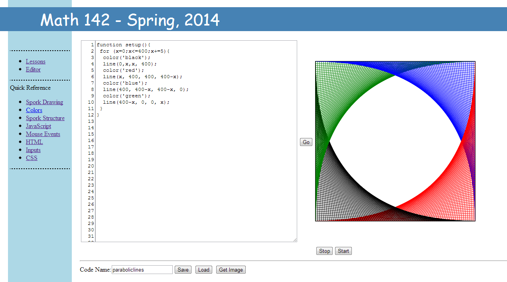
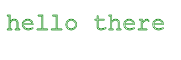

To give students quick access to the ability to write JavaScript programs which draw pictures, interact with the mouse (or touchscreen), and use animation, we will use a library called Spork.
A library is a special type of program intended to be used to simplify writing other programs. Spork is intended to remove some of the hurdles a beginning programmer might encounter
when trying to perform certain tasks relate related to drawing. It is simple enough to allow for "spoon feeding" beginners, but it also has enough teeth to handle meatier, more complex tasks.
When we first begin programming, we will use the Spork Editor, pictured here embedded in the course web page. 
On the left side of the editor is a box in which you can type text (JavaScript code). On the right side of the editor is a rectangle called the canvas. Much of your code will include commands for drawing on the canvas.
You will type code in the text area, click the "Go" button between the text area and the canvas, and then view the result that your code draws on the canvas.
At the bottom of the editor are a text box and several buttons.
Save You can type a name in the text box and click "Save" to save a draft of your code within your Browse. Note: The save button is for temporary storage. It
saves code within the browser. It is not secure. It should remain under normal shut downs and restarts, but it will vanish when the browser's memory is cleared. On campus machines, programs saved in this way will
probably disappear every night. For more permanent storage, you should copy and paste your code into a text editor.
Load
Press "Load" to retreive programs that you have saved.
Get Image If you have drawn a nice picture with Spork that you want to save, click "Get Image." This will display a savable copy of the drawing canvas. Right click on the image to save it.
Comments
A bunch of JavaScript commands written together can be pretty unreadable without a good deal of concentration. For example, it is difficult to tell what this code does by just looking:
We can make code more readable (to ourselves and others) with comments. Anything on a line of code following a double slash // is ignored. Text written after //
is called a comment. Our code is much more meaningful with comments.
//Smiley Face
circle(200,200,100); //outline of face
triangle(210,190,200,210,190,190); //nose
circle(230,150,10); //right eye
circle(170,150,10); //left eye
arc(200,200,50,45,135); //mouth
At least the intent of the code is more clear here. Notice how we also included an empty line to make the title stand out. Blank likes like this are also ignored.
To have comments such as this span more than one like, we can start the comment off with /* and finish it with */
/*
Jane D. Smith
Math 142
Assignment 1
Simple Smiley Face
*/
circle(200,200,100); //outline of face
triangle(210,190,200,210,190,190); //nose
circle(230,150,10); //right eye
circle(170,150,10); //left eye
arc(200,200,50,45,135); //mouth
The output of this code is pictured below.
Lines and Shapes
point
The command point(x,y) draws a point at (x,y). This is a circle whose radius is the current line width.
point(50,50);
line
The command line(x1,y1,x2,y2) draws a line segment from the point (x1,y1) to the point (x2,y2).
line(25,25,50,75);
The line command can also be used to link several line segments together. The command line(x1,y1,x2,y2,x3,y3,...,xn,yn) draws a sequence of line segments from the point (x1,y1) to the point (x2,y2) and then from (x2,y2) to (x3,y3) and so on.
line(25,25,50,75,50,10,75,75,90,50);
rect
The command rect(x,y,w,h) draws a rectangle with upper left corner at (x,y) with width w and height h.
rect(10,10,80,30);
triangle
The command triangle(x1,y1,x2,y2,x3,y3): draws a triangle with vertices (x1,y1), (x2,y2), and (x3,y3).
triangle(10,10,80,30,50,80);
quad
The command quad(x1,y1,x2,y2,x3,y3,x4,y4) draws a quadrilateral with vertices (x1,y1), (x2,y2), (x3,y3), and (x4,y4).
quad(10,10,80,20,70,60,20,80);
circle
The command circle(x,y,r) draws a circle of radius r centered at (x,y).
circle(50,50,30);
ellipse
The command ellipse(x,y,rx, ry) draws an ellipse centered at (x,y) whose with a horizontal radius of rx and a vertical radius of ry.
ellipse(50,50,40,20);
arc
The command arc(x,y,r,a,b) draws an arc of a circle centered at (x,y) with radius r from the angle a clockwise through the angle b.
arc(50,50,25,45,215);
arc(50,50,25,45,215); fill();
Adding angles to the ellipse command such as ellipse(x,y,rx, ry,a,b) will similarly draw an arc of an ellipse.
ellipse(50,50,40,20,45,215);
ellipse(50,50,40,20,45,215); fill();
linewidth
The command linewidth(n) changes the width of any drawing stroke (lines, rectangles, triangles, circles, ellipses) to n pixels.
The color command is used to change the color of the drawing stroke. Colors may be specified by name, by RGB value, or by RGBA value. To specify a color by name, use a command of the form color('red').
Note how the name of the color is enclosed in quotation marks (you may use single or double quotes). These can be single or double quotation marks.
To specify a color by RGB value use a command of the form color(r,g,b). Here r, g, and b are numbers from 0 to 255 which specify the intensity of the red, blue, and green components of a color. A value of 0 means that none of that color component is present. A value of 255 means that the maximum amount of that color is present. The color color(0,0,0) is black. The color color(255,255,255) is white. If the same value is used for r, g, and b, then the color is a shade of grey.
RGBA colors include three RGB values along with an alpha channel value. This is a number between 0 and 1 which specifies the transparency of the color. A value of 0 is completely transparent. A value of 1 is completely opaque. Values in between are semi-transparent.
Some common colors and their RGB values can be seen here.
fill
The command fill() fills the last shape drawn with the color specified by fillcolor(c). The arguments to fill color should follow the conventions discussed above about colors.
The command translate(x,y) moves (slides or translates) the canvas horizontally x pixels and vertically y pixels. If the origin is at the upper left corner, this moves the origin to the point (x,y).
circle(0,0,50); When this circle is drawn at (0,0) without a translation, only a quarter of the circle is seen in the upper left hand corner.
transform(50,50); circle(0,0,50); When the circle is drawn after the translation, the origin is now in the center of the canvas, and the entire circle is seen.
rotate
The command rotate(n): Rotates the canvase n degrees clockwise around the origin.
The command scale(sx,sy) scales all all further drawing. Horizontal distances are scaled by sx, and vertical distances are scaled by sy. The command scale(s) is short for scale(b,b). Scaling is accomplished by multiplying x values by sx and y values by sy.
The command save() will save the current state (translation, scale, rotation) of the drawing canvas. Once other transformations have been performed, this state can be restored with the command restore().
save(); //perform drawing commands here restore();
Text
filltext
The command filltext(s,x,y): Writes the string s with the current font beginning at the point (x,y). The color used to write is the same as the current fill color.
The command filltext(s,x,y) can also be written as fillText(s,x,y) or simply print(s,x,y).
stroketext
The command stroketext(s,x,y): Writes the string s with the current font beginning at the point (x,y) but only outlines the letters using the current color.
stroketext('hello there', 10,50);

color('green'); stroketext('hello there', 10,50);
The command stroketext(s,x,y) can also be written as strokeText(s,x,y).
font
The font command is used to change the font used to print. Calls to this command must look something like
font('italic 30px Helvetica') or
font('bold 40px Courier') or
font('20px sans-serif') or
font('30px times').
font('30px comic sans ms'); filltext('hello there', 10,50);
Other
clear
The command clear() clears (erases) the drawing canvas without making any other changes.
clear();
size
The command size(x,y) sets the drawing canvas size to be x pixels wide and y pixels high. This resets most properties of the canvas (translation, scale, font, colors, etc.).
size(100,100);
size(200,50);
At any time the current width and height of the drawing canvas are stored in the variables width and height.
theWidth=width; theHeight=height;
Time
The commands year(),month(),date(),day(), hour(), minute(), and second() return the year, month, day of the month, day of the week, hour, minute, and second of the current time.
A stand-alone Spork program should define a function named setup() and a function named draw().
Outside of these functions, nothing should be done except defining other functions and declaring global variables. Arranging the
program this way makes it easier for programs to be portable and it satisfies some technical requirements (which are explained here if you care).
When a Spork program is run, the function setup() is first executed followed by the function draw().
The setup() function should initialize variables, set the canvas size, and set up colors, background, fonts and the like.
Most drawing and calculations should be done in the draw() function. This function is also used to facilitate animations (which is discussed below).
...DECLARE GLOBAL VARIABLES......DEFINE FUNCTIONS...
function setup(){
...INITIALIZE VARIABLES......RESIZE CANVAS......SET COLORS, BACKGROUND, FONTS, ETC...
}
function draw(){
...EXECUTE MAIN DRAWING PROCEDURES...
}
Looping and Animation
Spork is designed to make animations easy by executing the draw() function repeatedly. Each time the function is executed variables can be updated, and the canvas can be redrawn.
To cause this action to begin, call the loop() function from within the setup() function.
function setup(){
size(100,100); //size canvas
translate(50,50); //move origin to center
loop(); //tell Spork to loop
}
function draw(){
clear(); //clear the canvas for new drawing
rotate(1); //rotate 1 degree
point(50,0); //draw point
}
Starting and Stopping the Loop
At any point the Spork animation loop can be stopped with the command stoploop(). The animation loop can be restarted with the command startloop(). This is demonstated with the two buttons below.
Animation Speed
Animations can be sped up or slowed down with the timestep function. The command timestep(n) sets the amount of time between calls to the draw() function to be n milliseconds (a millisecond is one one-thousandth of a second). Initially,
the time step is 1 millisecond. The time step would usually be set in the setup() function, but it can also be called at any point in time. The buttons below can be used to speed up and slow down the animation.
Note that not all browsers were created equal. Some browsers will be able to draw and redraw the canvas faster than others. If the time step is too small, some browsers might not be able to redraw the canvas fast enough. In this case the animation will run more slowly.
Technical
The Spork library uses a window.onload function to initialize the Spork div and canvas. This function is not executed until after all of the JavaScript code has been loaded.
Any drawing functions at the global level outside of the setup() and draw() functions would be executed before the canvas even existed to draw on.
If you plan on having your own window.onload function, this code should go inside of the setup() function so as not to conflict with Spork's window.onload.